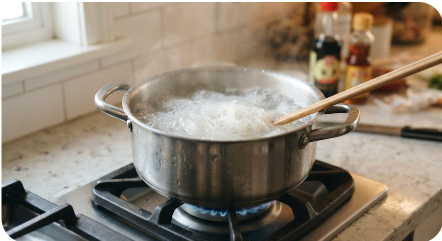
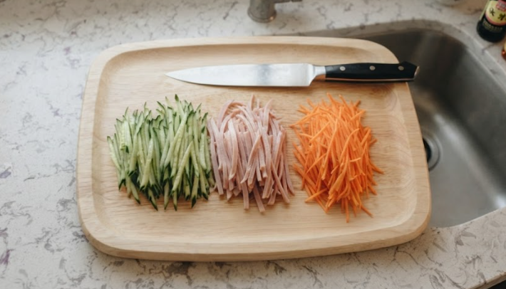
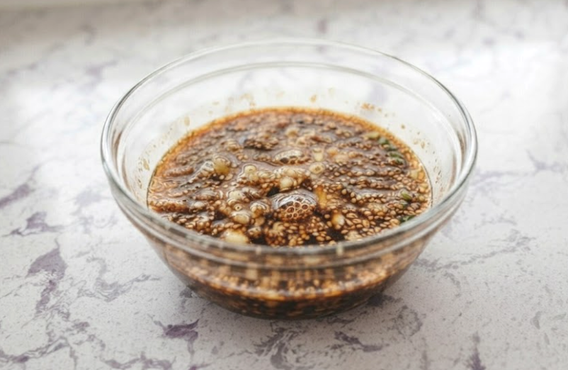
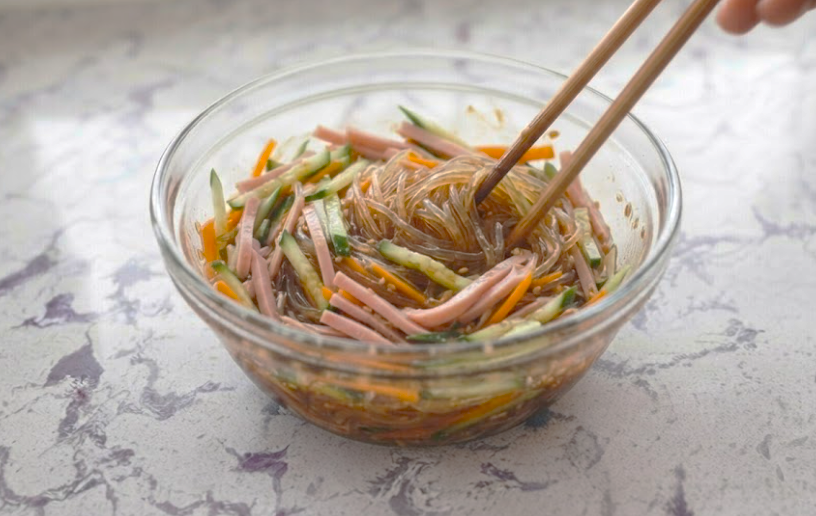
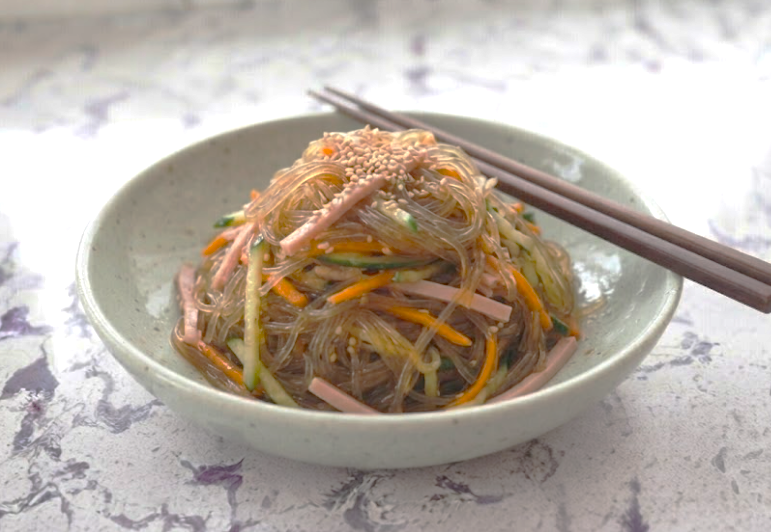

材料（一人分）
- ・春雨20g
- ・きゅうり1/4本
- ・ハム2枚
- ・にんじん（なくてもOK）1/4本
- ・ごま少々
- 合わせ調味料
- ・お酢大さじ1/2
- ・しょうゆ大さじ1/2
- ・砂糖小さじ1/2
- ・ごま油小さじ1/2
必要な道具
- ・鍋
- ・ボウル
- ・ざる
- ・包丁
注目ポイント
-
 火加減に注意
火加減に注意 -
 ゆですぎ注意
ゆですぎ注意 -
 水気をしっかり切る
水気をしっかり切る -
 少し置くと美味しい
少し置くと美味しい
作り方
① 鍋にお湯を沸かし、春雨を袋の表示時間どおりにゆでます。 ゆですぎるとベチャっとしやすいので注意しましょう。

② ゆで上がった春雨をざるにあげ、 冷水でよく冷やします。 その後しっかり水気を切ります。
③ きゅうり、ハム、にんじんは細切りにします。 具材の太さをそろえると、 見た目も食べやすさもよくなります。

④ ボウルにお酢、しょうゆ、 砂糖、ごま油を入れてよく混ぜます。 砂糖が溶けるまで混ぜましょう。

⑤ 春雨と具材をボウルに入れ、 全体をよく混ぜます。 最後にごまを加えて軽く混ぜます。

⑥ 器に盛り付けて完成です。 少し冷蔵庫で冷やすと、 さらに味がなじんで美味しくなります。

調理のコツ
春雨は表示時間を守って
ゆでましょう。
ゆでたらすぐ冷水で冷やし、
水気をしっかり切ると
ベタつきにくくなります。
アレンジ
ハムの代わりに
カニカマを入れると
彩りがよくなります。
ツナを加えると
ボリュームが出ます。
ラー油を少し加えると、
中華風のピリ辛サラダになります。